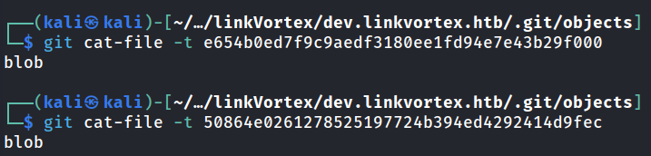

Git is a content-addressable filesystem. That means that each file we add to our repository is been addressed as a SHA-1 hash. This unique hash is what we will use later to retreive these files.
Each hash is under the .git/objects folder.
.git/objects
├── 50
│ └── 864e0261278525197724b394ed4292414d9fec
│
├── e6
│ └── 54b0ed7f9c9aedf3180ee1fd94e7e43b29f000
│
└── pack
├── pack-0b802d170fe45db10157bb8e02bfc9397d5e9d87.idx
└── pack-0b802d170fe45db10157bb8e02bfc9397d5e9d87.pack
Here we have two objects with hashes 50864e0261278525197724b394ed4292414d9fec and e654b0ed7f9c9aedf3180ee1fd94e7e43b29f000.
Git stores different types of objects in .git/objects. An object stored here could either be a commit, a tree, a blob, and an annotated tag.
We can use the command git cat-file -t <Object-Hash> to determine the type of the object.

Both objects are Blob(Binary Large Object), so we have probably found a source code file. To read the contents use the command git cat-file -p <Object-Hash>.